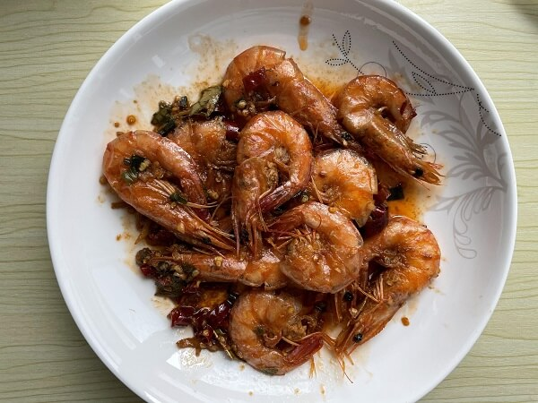
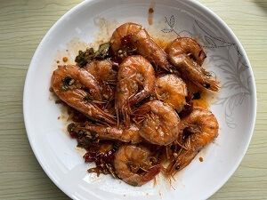

食材用料
| 食材 | 数量 |
|---|---|
| 基围虾 | 10个 |
| 油 | 适量 |
| 葱 | 适量 |
| 蒜 | 适量 |
| 姜 | 适量 |
| 辣椒 | 适量 |
| 香叶 | 适量 |
| 盐 | 适量 |
| 清水 | 半碗 |
| 生抽 | 适量 |
做法步骤
| 图片 | 步骤 |
|---|---|
 | 1. 准备食材 |
 | 2. 葱切段，姜切撕，蒜切末装盘 |
 | 3. 调料汁：清水、生抽、盐、香叶 |
 | 4. 虾洗净，挑去虾线 |
 | 5. 热锅热油，下虾，煎至两面成漂亮的红色出虾油后，盛出虾（用锅铲轻轻压一压虾，红油出的多） |
 | 6. 把葱和姜放入虾油锅中爆香 |
 | 7. 放入煎好的虾，倒入调料汁 |
 | 8. 大火收汁 |
|  | 9. 装盘 |

Study hard and make progress every day